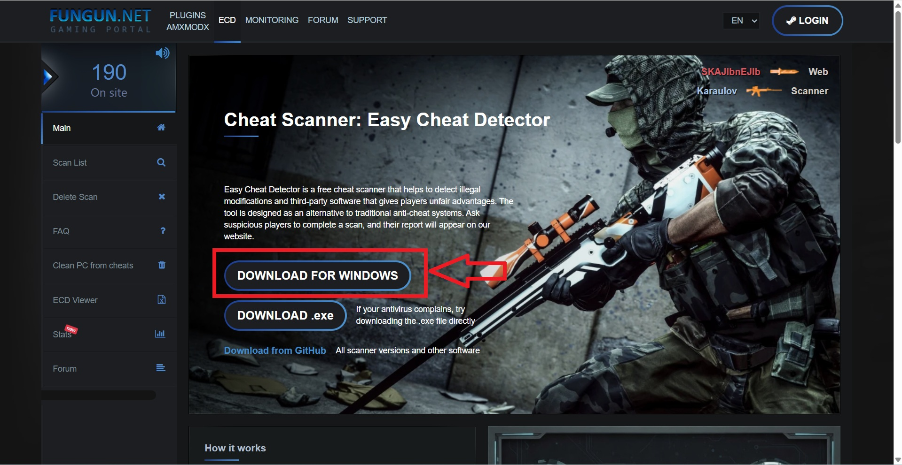
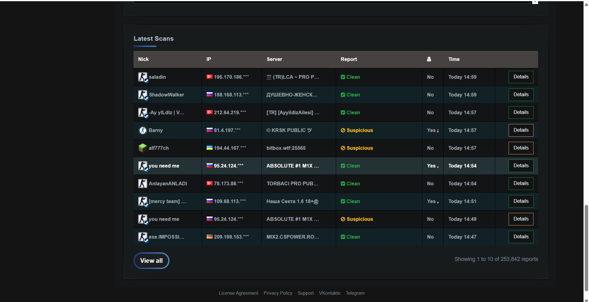

Şüpheli oyuncuların nasıl inceleneceği, Fungun tarama süreci ve uygulanacak admin prosedürleri.
Güçlü oynayan her oyuncu hile değildir. Kanıtsız işlem uygulanmaz. Adminin görevi sinirle ban atmak değil, doğru kararı vermektir.
Tek başına hiçbir hareket ban sebebi değildir. Oyuncu birkaç round dikkatli şekilde spectlenmelidir.
Oyuncu birkaç round dikkatli şekilde izlenmelidir.
Şüphe oluşur oluşmaz kick veya ban işlemi uygulanmaz.
Oyuncudan Fungun taraması yapması istenir.
Kararsız kalınan durumlarda başka admin görüşü alınabilir.
Şüpheli oyunculardan Fungun taraması yapması istenir.
Oyuncuya:
Google'a "fungun" yazıp ilk çıkan Fungun sitesine gir.
şeklinde tarif yapılır.

Tarama bittikten sonra admin Fungun sitesinde aşağı kaydırarak son tarananlar listesini kontrol eder.
İstenirse site dili Türkçeye çevrilebilir.
Oyuncunun nicki bulunur ve tarama sonucu kontrol edilir.

Sürekli oyalayan, oyundan çıkan, bahane üreten veya taramayı reddeden oyuncular şüpheli kabul edilir.
Böyle durumlarda sunucu kurallarına göre kick, geçici ban veya gerekli diğer işlemler uygulanabilir.
İyi admin rastgele işlem yapan değil, kanıta göre karar verendir.